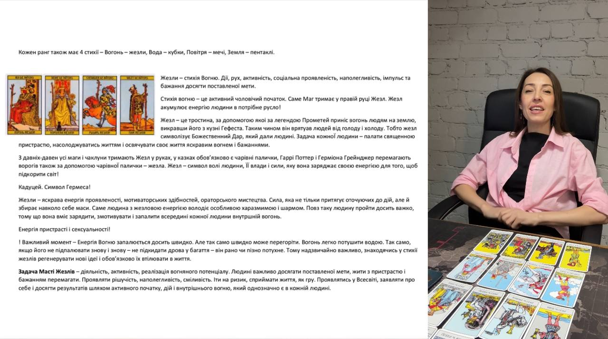
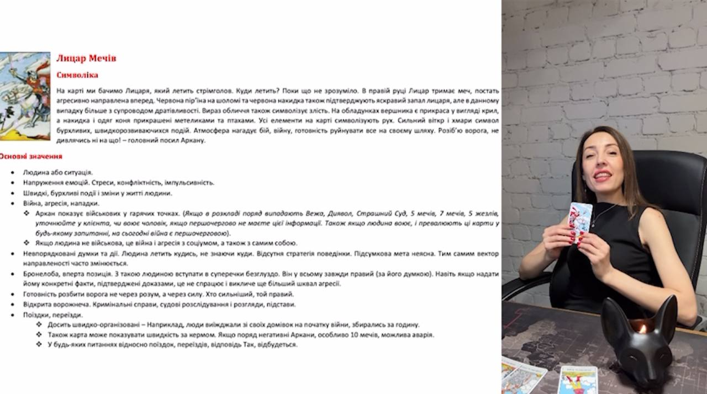
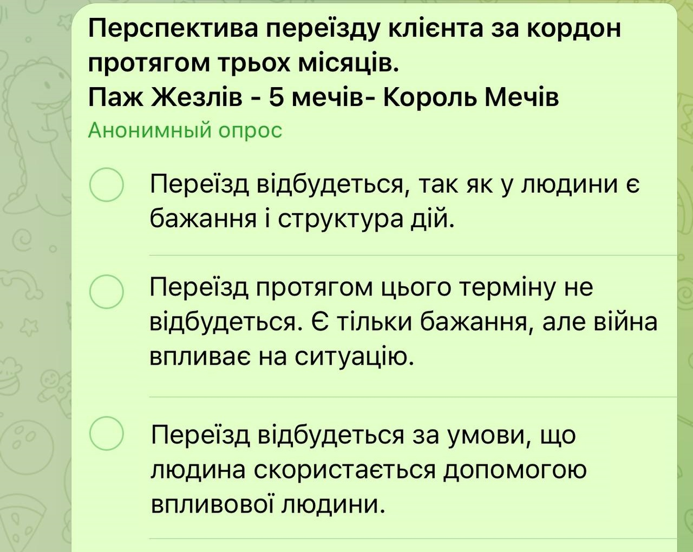

-
01
Загальна характеристика Фігурних карт - розподіл по стихіям та рангам. Опис кожної стихії та рангу з детальними трактовками.
 -
02
Детальні трактовки 16 фігурних карт. Символіка, основні значення, особисте життя, робота, фінанси, здоров’я, порада.
 -
03
Тонкощі фігурних карт, засновані на власних напрацюваннях та досвіді.

-
04
Приклади розкладів з детальними трактуваннями

-
05
Тестування для засвоєння інформації
